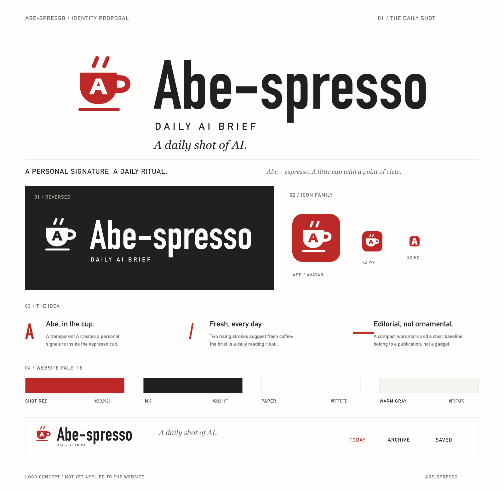

<!doctype html><html lang="zh-CN"><meta charset="utf-8"><meta name="viewport" content="width=device-width, initial-scale=1"><title>Abe-spresso · Logo 设计方案</title><style>body{margin:0;background:#f5f4f0;color:#20211f;font-family:system-ui}main{max-width:1400px;margin:auto}img{width:100%;height:auto;display:block}p{margin:0;padding:24px 5%;font-size:14px;line-height:1.8}a{color:#bd2926}</style><main><p>独立设计提案，尚未替换网站现有 Logo。<a href="logo-primary.svg" download>主 Logo SVG</a> · <a href="logo-primary.png" download>透明底 PNG</a> · <a href="README.md">设计与使用说明</a></p></main></html>